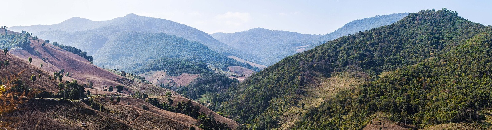

ไทย EN DE A A
34 schools, one province
1
34 ~100 40

Wikimedia Commons · CC BY-SA 3.0
Chiang Mai Citylife, Keeping rural kids in school: the woman behind FERC 2.0 , 3 Sep 2026.
OBEC school register, Open Data Common , FERC Thailand, How to donate .
OSRM Wikipedia, Chiang Mai .OpenStreetMap contributors , OpenFreeMap , MapLibre .FERC Thailand, Sponsored Student Program leaflet (tax deduction answer; payment routes),
Every.org, Foundation for the Education of Rural Children (FERC) : US tax deduction; “hosted at Myriad USA”,
Every.org, Pricing : ACH free; card 2.2% + USD 0.30; PayPal/Venmo 1.99%,
Myriad USA, American Friends Funds : management fee 5% on the first USD 100,000 a year; grants from USD 5,000, 3–4 weeks; acknowledgement to donors,
Wise, Send money to Thailand and its public comparison data (api.wise.com/v4/comparisons; CHF, EUR, GBP, USD to THB at 100–10,000; mid-market rates; bank rows are fee plus rate margin), 19 Oct 2026. Wise pays out THB from its local bank account.
Kasikornbank, Announcement 029/2569, fees for international trade products (announced 23 Sep 2026, effective 1 Oct 2026): Global Inward 0.25%, min THB 200, max THB 500; and Table 3, service fees (effective 22 Sep 2026),
Bank of Thailand, PromptPay : standard fee table,
Kasikornbank, PromptPay for Business : documents; one tax ID to one account,
Revenue Department, e-Donation portal for donation units ; Q&A, 4 Jan 2022 (who recipients are; bank QR covers individuals only; registration documents); register of donation units , searched 19 Oct 2026 for “FERC”, “Rural”, “Education” and, in Chiang Mai, “ชนบท”: no FERC entry.
Forvis Mazars, Thailand extends electronic tax systems and e-Donation incentives through 2027 , 23 Jul 2026.
THE STANDARD, Donations to temples or foundations must go through e-Donation from 1 Jan 2026 , 18 Aug 2025.
Fedlex, DBG, Art. 33a and Art. 56 g (status 1 Jan 2026).
Canton Zurich, Steuerbuch ZStB 61.1 (1 Feb 2024), foreign activities,
Swiss Philanthropy Foundation, Cross-border Donations Fund ,
RaiseNow, TWINT for charities ,
Omise (Opn Payments), Pricing, Thailand and restricted businesses (“Charitable organization: fund-raising activities” is restricted on some channels; “Donations” appears in the prohibited financial services),
Stripe, Businesses Stripe can't support via Connect in Thailand ,
PayPal, Fees for sellers, Thailand : 4.40% + fixed fee from senders outside Thailand,
GlobalGiving, Our fees ,
Bank of Thailand, Exchange control regulation ,
SlipOK, slipok.com ; Hongdam's own pay box, hongdam.net/translation .
Prism the Gift Fund, British Friends Of structure (page text as shown in search results; the site blocked direct reading).
swissinfo, Trump policies amplify banking headaches of Swiss Abroad , 14 Apr 2025.
LALIVE, De-banking and Re-banking in Switzerland , 3 Jul 2026.
Myriad, Alliance for borderless giving: members ,